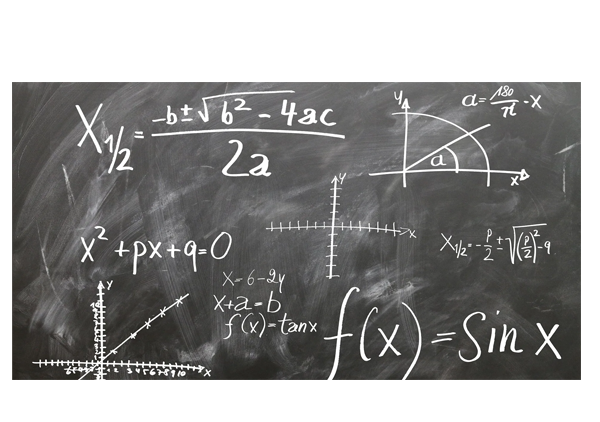

CARGA HORÁRIA ANUAL: 120 HORAS.
No terceiro ano do Ensino Médio Técnico, a área de Matemática e suas tecnologiastem como compromisso propiciar uma formação que permita a compreensão pelo aluno da Matemática como produção científica e humana relacionando situações cotidianas com outras áreas do saber. Pensando na construção da autonomia, os saberes e habilidades foram organizados de maneira a proporcionar, condições para que a intencionalidade se concretize, possibilitando o aprofundamento de conhecimentos matemáticos trazidos de etapas anteriores do ensino básico e do primeiro e segundo ano do Ensino Médio Técnico e construindo novos para além da sua formação da educação básica, usando estratégias diversificadas e recursos tecnológicos. Nesse sentido, a área de Matemática e suas Tecnologias não é vista de maneira isolada e sim, buscando relações significativas com as outras áreas de conhecimento, colaborando com a formação geral, de maneira integral. Ressaltando-se o trabalho em diferentes frentes, no que se refere aos saberes, propondo a matemática como uma possibilidade de leitura de mundo, como linguagem, favorecendo o desenvolvimento da criticidade, a difusão de produções científicas, intervenções sociais e a análise de aspectos culturais. Dessa maneira, os saberes apresentados preveem que os alunos explorem os conceitos de funções, limite derivada, estatística, geometrias e conjecturas – além dos softwares dedicados à interpretação, organização e apresentação de dados gráficos e numéricos, dedicados às tarefas do cotidiano dos alunos; observa-se que cada um dos saberes elencados pode ser desdobrado em outros.
EMT3MAT1: Propor ou participar de ações para investigar desafios do mundo contemporâneo e tomar decisões éticas e socialmente responsáveis, com base na análise de problemas sociais, como os voltados a situações de saúde, sustentabilidade, das implicações da tecnologia no mundo do trabalho, entre outros, mobilizando e articulando conceitos, procedimentos e linguagens próprios da Matemática.
EMT3MAT101: Propor ou participar de ações adequadas às demandas da região, preferencialmente para sua comunidade, envolvendo medições e cálculos de perímetro, de área, de volume, de capacidade ou de massa. EMT3MAT102: Planejar e executar pesquisa amostral sobre questões relevantes, usando dados coletados diretamente ou em diferentes fontes, e comunicar os resultados por meio de relatório contendo gráficos e interpretação das medidas de tendência central e das medidas de dispersão (amplitude e desvio padrão). EMT3MAT103: Aplicar conceitos matemáticos no planejamento, na execução e na análise de ações envolvendo a utilização de aplicativos e a criação de planilhas (para o controle de orçamento familiar, simuladores de cálculos de juros simples e compostos, entre outros), para tomar decisões. EMT3MAT104: Construir e interpretar tabelas e gráficos de frequências, com base em dados obtidos em pesquisas, incluindo ou não o uso de softwares que inter-relacionem estatística, geometria e álgebra. EMT3MAT105: Interpretar e comparar conjuntos de dados estatísticos por meio de diferentes diagramas e gráficos, reconhecendo os mais eficientes para sua análise relacionando as diversas áreas do conhecimento. EMT3MAT106: Desenvolver conceitos da geometria plana e da geometria espacial para realizar cálculos e análises, de aplicações em situações reais levando em consideração aspectos culturais da matemática relacionando as diversas áreas do conhecimento. EMT3MAT107: Investigar a deformação de ângulos e áreas provocada pelas diferentes projeções usadas em cartografia (como a cilíndrica e a cônica), com ou sem suporte de tecnologia digital EMT3MAT108: Desenvolver situações que propiciem a interpretação e resolução de problemas que envolvam a formação do pensamento probabilístico recorrendo a estratégias diversas.
GEOMETRIA PLANA E ESPACIAL: ASPECTOS CULTURAIS E RELAÇÕES COM OUTRAS ÁREAS DO
CONHECIMENTO
• Medida da área de uma superfície (reconfigurações, aproximação por cortes etc.)
• Cálculo de medida de área, por meio da dedução de expressões, com aplicações em
situações reais como o remanejamento e a distribuição de plantações, entre outros, com
ou sem apoio de tecnologias digitais.
• Cálculo de áreas totais e de volumes de prismas, pirâmides e corpos redondos em
situações reais.
• Padrões indígenas e suas relações com as transformações geométricas – isometrias.
• Semelhança entre triângulos (por transformações geométricas – homotetias).
• Problemas sobre ladrilhamento: tipos ou composição de polígonos que podem ser
utilizados em ladrilhamento, generalização de padrões observados.
MATEMÁTICA E INTERVENÇÕES SOCIAIS: MATEMÁTICA PARA A AUTONOMIA
• (Re)visitando funções: modelagem e modelação.
PENSAMENTO PROBABILÍSTICO
• Problemas de contagem envolvendo agrupamentos ordenáveis ou não de elementos,
por meio dos princípios multiplicativo e aditivo.
• Casos de agrupamento: diagrama de árvore.
• Espaço amostral de eventos aleatórios.
• Tipos de espaços amostrais.
• Contagem de possibilidades.
• Cálculo de probabilidade de eventos em experimentos aleatórios sucessivos.
• Porcentagem: cálculo de taxas, índices e coeficientes.
• Probabilidade simples e condicional.
• Eventos sucessivos, mutuamente exclusivos e não mutuamente exclusivos.
• Distribuição estatística, distribuição normal e medidas de posição (mediana, quartis,
decis e percentis).
ESTATÍSTICA: CONEXÕES E REPRESENTAÇÕES
• Amostragem.
• Gráficos e diagramas estatísticos: histogramas, polígonos de frequências.
• Medidas de tendência central e medidas de dispersão.
• Conceitos simples de Estatística Descritiva.
• Medidas de tendência central (média, moda e mediana).
• Medidas de dispersão (amplitude, desvio padrão e coeficiente devariância).
• Gráficos estatísticos (histogramas e polígonos de frequência).
• Distribuição normal.
• Plotagem: Excel.
CGEOMETRIA E OCUPAÇÃO DO ESPAÇO
• Prismas, pirâmides, cilindros e cones: Observação de sólidos geométricos no dia a dia e
formulação de conjecturas para o cálculo do volume.
• Princípio de Cavalieri.